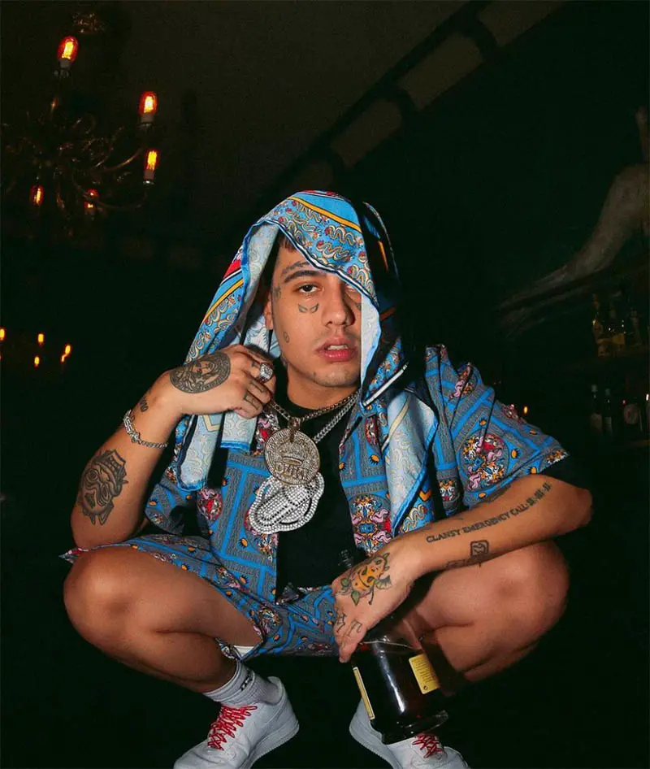

Duki, también conocido como Mauro Ezequiel Lombardo, es un cantante y rapero argentino nacido en 1996 en Buenos Aires. Comenzó a competir y se hizo conocido en la escena underground por competencias como El Quinto Escalon. En 2017, lanzó su primer single "No vendo trap" que tuvo un gran éxito en la comunidad del rap argentino. En 2018, Duki junto a Neo Pistea e Ysy A formaron el grupo "Modo Diablo", con los cuales crearon grandes exitos musicales y hicieron giras por Argentina. En 2019 lanzó su primer álbum "Super Sangre Joven". El cual fue un gran éxito, posicionándose en los primeros lugares de las listas de éxitos en Argentina y América Latina. Duki ha colaborado con varios artistas de la escena musical argentina e internacional, incluyendo a Khea, Paulo Londra, Bad Bunny, y J Balvin. En 2019, fue galardonado con el premio MTV Europe Music Award como "Mejor Artista Latinoamericano Sur". Con su estilo fresco y auténtico, Duki ha sido considerado como uno de los mayores exponentes del trap en español. Ha logrado capturar la atención de un público joven y ha tenido una gran influencia en la música urbana en Argentina y América Latina.
